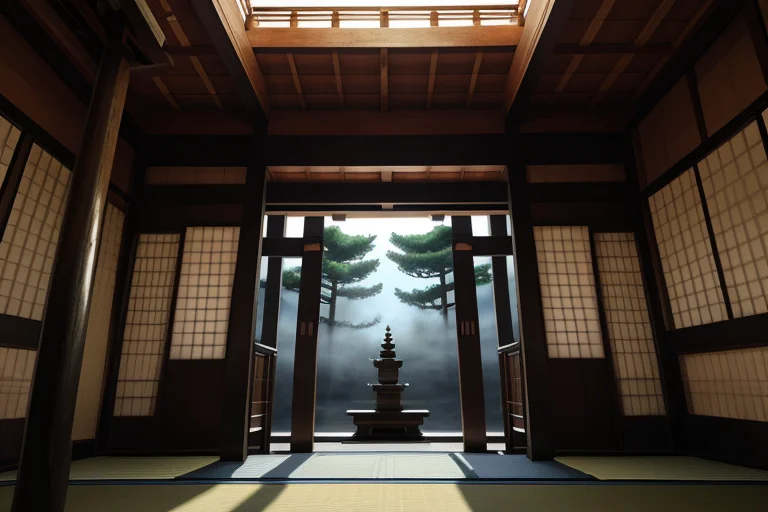
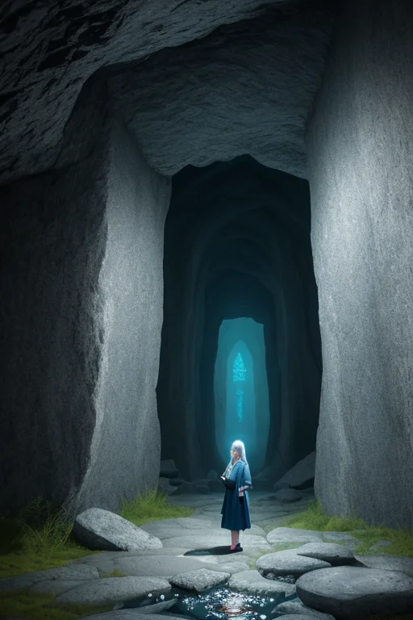
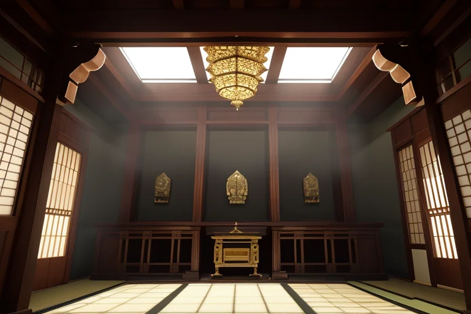
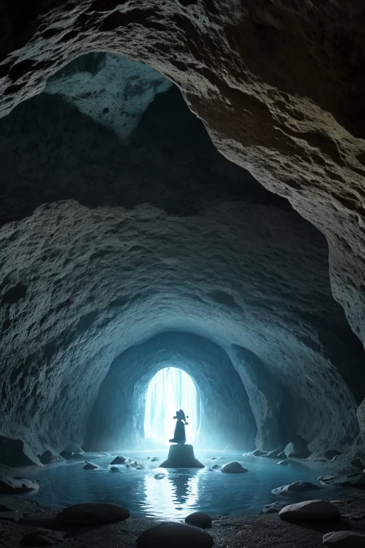
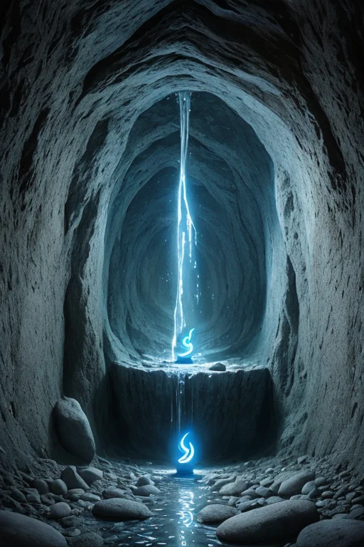

第一章 現実の岩手
あなたはまだ気づいていない。この土地にも、王がいることを。
中尊寺金色堂の闇は深い。外の光を遮断した堂内に、千年前の金箔が微かに、しかし確かに輝いている。訪れる人々の息づかいさえ吸い込んでしまうような静寂。その静けさは、奥州藤原氏の栄華も、その滅びも、等しく包み込み、ただ「あった」という事実だけを沈黙のうちに伝え続けていた。
王はその闇の片隅に立っていた。イワティア・ルーン。その姿は、古びた経巻を手にした老僧のようであり、あるいは風化しかけた石碑そのもののようでもあった。彼の目は、金色堂の柱一本一本、螺鈿の細工ひとつひとつに刻まれた、語られることのなかった工匠たちの祈りを見ていた。完成を喜ぶ声も、戦火に怯える嘆きも、すべてはこの空間に織り込まれ、消えることなく「在る」。彼はそう信じたいと願っていた。
しかし、現実はより複雑だった。東北の地を貫く巨大な歪みは、絶えず蠢いていた。次の「ずれ」がいつ訪れるか。王の役目は、その衝撃を一段階緩め、逃げる時間をほんの少しだけ引き延ばすこと。金色堂を守ることさえ、約束されていない。彼は目を閉じ、地の底から響く、言葉にならない大地のうめきに耳を澄ませた。

第二章 歪みの兆候
遠野の里を流れる風は、座敷わらしの噂を運んでくる。かつてはどの家にもいたという、小さき者たちの気配。今は、語る人も、信じる人も少なくなった。語られなくなった物語は、その土地からゆっくりと色を失い、かすかな「隙間」となって残る。王イワティアは、その隙間の集積が、地盤の微妙な「ほつれ」へと繋がることを知っていた。
三陸の海は深く青い。浄土ヶ浜の奇岩は、かつて多くの漁師の無事を願う声に洗われてきた。だが、海鳴りの中に混じる祈りの数は、年々、確かに減っている。祈りという名の、目に見えぬ支え。その密度が薄まる時、歪みは静かに、確実に進行する。
龍泉洞の地下湖は、一切の物音を吸い込む暗闇だった。水底からは、微細な振動が伝わってくる。次の「ずれ」の、初期の胎動。王は手にした石に刻まれた古いルーン文字に触れ、無数の語られずに消えゆく物語たちに、静かに耳を傾けた。語られない物語は、消える。だが、その痕跡は、この土地の質感として、永遠に残り続けるのだ。

第三章 沈黙の対峙
王は中尊寺金色堂の闇に立っていた。外光を遮られた空間は、漆黒の鏡のようであり、金色の阿弥陀如来群像が、かすかな自分の輪郭を映し出していた。ここには、奥州藤原氏の栄華という、壮大な物語が封じられている。同時に、その終焉という、語られることの少ない物語も。
「語られなければ、それは存在しないのか」
自問が、静寂を切り裂く。彼は調整者だ。巨大な歪みを前に、津波の速度を数秒遅らせ、崩落の規模を一段階減じることしかできない。救えなかった命の物語。語られる機会を失った無数の日常。それらは、南部鉄器のように冷たく、確かにこの土地の重みとなって残る。
彼は自らの内面を見つめた。感情なき存在として派遣されたはずが、この土地の「語り」の密度に染まり、消えゆく物語ひとつひとつに、深い共感という痛みを覚えていた。沈黙は、消滅ではない。浄土ヶ浜の奇岩が波に削られながらも在り続けるように、語られぬ物語は、風景や習俗、人々の無意識の所作に転生する。その転生を支えること。それこそが、静律線を護る王の、静かなる戦いだった。

第四章 妖精との対話
龍泉洞の地底湖は、永久の闇に抱かれた鏡のようだった。その畔で、ルーンティアは静かに石面を撫でていた。彼女の指先から微かなルーンが浮かび、湖水に映らない古い言葉となって石に浸み込む。
「語られぬ物語は、消えません」彼女の声は滴る水音と同調していた。「ただ、形を変えます。例えば、この洞窟の息づかい。あるいは、遠野の里で、理由もなく道端の石を避ける老婆の癖。座敷わらしの伝説が薄れても、家の隅を清める習慣は残る。それが、魂の地層です」
イワティアはその言葉を黙って受け止めた。彼が感じる「痛み」は、物語の死ではない。変容の瞬間に立ち会う、一種の産みの苦しみなのかもしれない。祈りとは、この変容を見守り、その過程で散逸する魂の欠片を、風景という器に丁寧に収める行為だ。彼の微調整は、巨大な災害の波を一秒遅らせることだけではない。この土地の、目に見えぬ記憶の断絶を、ほんの少しだけ繋ぎ留める仕事でもあった。
「我々は語り手ではない」ルーンティアが呟いた。「語りが沈黙に還る時、その沈黙が豊かであるよう、場を整える者です」
洞窟の闇は、すべての音を吸い込み、そして優しく保持していた。

第五章 微調整と余韻
龍泉洞の地下水は、千年の時を経てなお、静かに岩を穿つ。イワティア・ルーンはその水音に耳を澄ませた。そこには、三陸の海鳴り、遠野の風の囁き、金色堂に響いた読経の残響、すべてが溶け込んでいる。彼の調整は、物理的な歪みだけでなく、この土地から生まれ、また消えゆく無数の「物語」の波長にも及んでいた。語られず、書かれず、ただ心の中に在ったもの。それらが完全に無に還る前に、その「余韻」を風景に刻み込む。
彼は英雄ではない。語り手ですらない。ただ、消えゆくものの最後の一瞬を、深い静寂の中に置く調整者だ。南部鉄器の冷たさに宿る職人の執念、わんこそばの椀に込められたもてなしの心、座敷わらしの伝承が持つ畏敬と親しみ。それらは形ある記録にはならないかもしれない。だが、岩手の山々の空気や、海辺に打ち寄せる波の間には、確かにその「余韻」が息づいている。
語られない物語は、形を変えて風景となる。完全には消えない。王は微かに微笑んだ。感情という名の共鳴を、初めて自覚して。
あなたの町にも、王がいる。